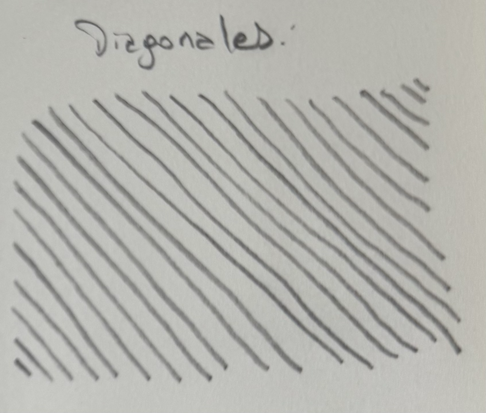

Fundamentos
Para dibujar como los profesionales, es necesario dominar los fundamentos.
En esta sección se detallan los fundamentos del dibujo, incluyendo linea y trazo, formas 2D y 3D, Perspectiva, entre otros.
Sobre esta sección
En esta sección se abordan los conceptos básicos que todo artista debe conocer para desarrollar sus habilidades de dibujo, incluyendo:
- Linea y Trazo.
- Formas 2D.
- Formas 3D.
- Perspectiva con 1, 2 y 3 puntos de fuga.
- Teoría del Color.
Línea y Trazo (¡clickeame!)
Teoría
La línea es la huella del movimiento. Es el recorrido que deja una herramienta sobre una superficie cuando el ojo y la mano actúan juntos. Puede describir, delimitar, sugerir o expresar. En el dibujo, la línea no es solo contorno: es energía, dirección y ritmo.
- Una línea fina y continua puede expresar calma o precisión.
- Una línea interrumpida o suelta puede dar sensación de movimiento o duda.
- Una línea gruesa y gestual transmite fuerza, peso o dramatismo.
El trazo es el modo en que la línea se ejecuta: su presión, velocidad, textura y fluidez. Un mismo lápiz puede generar infinitas variaciones de trazo, dependiendo de cómo lo sostengas, qué ángulo uses o con cuánta confianza lo muevas.
En conjunto, línea y trazo revelan la personalidad del artista. Si observás los bocetos de Leonardo da Vinci o Egon Schiele, notarás que sus líneas parecen una extensión directa de su pensamiento: cada una tiene intención.
Ejemplos de bocetos (¡clickeame!)
 |
 |
Práctica
Todo artista sabe que para mejorar se tiene que practicar, asi que aquí te dejamos algunos ejercicios para que practiques Linea y Trazos.
¿Que necesitas para empezar? Solo un lápiz (o boligrafo) y papel. No es necesario borrar si las lineas te salen mal, equivocarse es completamente normal y te ayudará a reconocer en que debes mejorar.
¿Cuanto tiempo tienes que practicar? No hay un tiempo establecido para esto, cuanto mas tiempo practiques, mejor será tu dominio de la línea y el trazo. Sin embargo, se recomienda seguir estos ejercicios al menos 5 minutos diarios. Puedes utilizar estos ejercicios para calentar antes de empezar a dibujar.
Nivel Básico (¡clickeame!)
Comenzamos con lineas verticales. Realiza una linea vertical de aproximadamente 5cm (no es necesario que uses una regla). Luego, dejando un espacio pequeño, realizaras otra linea similar. La idea es hacer varias lineas verticales en paralelo, con una separación de aproximadamente 0,3cm entre cada linea. Como se puede apreciar en el ejemplo a la derecha, las lineas verticales no son perfectas y no tienen porque serlo. Esta practica te ayudará a ganar confianza y control sobre el lápiz, ademas de mejorar tu coordinación ojo-mano. Así mismo, este tipo de ejercicios te ayudara a reconocer en que angulos te es mas facil o dificil hacer lineas rectas. |
 |
Continuamos con lineas horizontales. Realiza una linea horizontal de aproximadamente 5cm. Luego, dejando un espacio pequeño, realizaras otra linea similar debajo de la inicial. La idea es hacer varias lineas horizontales en paralelo, con una separación de aproximadamente 0,3cm entre cada linea. |
 |
Seguimos con lineas diagonales. Realiza una linea diagonal de aproximadamente 5cm. Luego, dejando un espacio pequeño, realizaras otra linea similar, siguiendo el angulo que has realizado en la anterior. La idea es hacer varias lineas diagonales en paralelo y, como hicimos anteriormente, mantener una separación de aproximadamente 0,3cm entre cada linea. |
  |
Nivel Intermedio (¡clickeame!)
Lineas verticales de tamaño variado Realiza una linea vertical de aproximadamente 1cm. Luego, dejando un espacio pequeño, realizaras otra linea cuyo tamaño será aproximadamente el doble de la anterior. La idea es hacer varias lineas verticales en paralelo, pero aumentar el tamaño de cada linea, con una separación de aproximadamente 0,3cm. |
 |
Continuamos con lineas horizontales de tamaño variable. Realiza una linea horizontal de aproximadamente 1cm. Luego, dejando un espacio pequeño, realizaras otra linea similar debajo de la inicial, un poco mas grande. La idea es hacer varias lineas horizontales en paralelo, pero aumentar el tamaño de cada linea, con una separación de aproximadamente 0,3cm. |
 |
Continuamos con lineas curvas horizontales y verticales. Realiza una linea con curvas (como se ve en el ejemplo) de aproximadamente 5cm. Luego, dejando un espacio pequeño, realizaras otra linea similar debajo de la inicial. Esto lo repetiremos unas cuantas veces, manteniendo una separación de aproximadamente 0,3cm entre cada linea. |
  |
Continuamos con lineas en zigzag, horizontales y verticales. Realiza una linea en zigzag (como se ve en el ejemplo) de aproximadamente 5cm. Luego, dejando un espacio pequeño, realizaras otra linea similar debajo de la inicial. Esto lo repetiremos unas cuantas veces, manteniendo una separación de aproximadamente 0,3cm entre cada linea. |
  |
Nivel Experto? (¡clickeame!)
Rulos Vamos a realizar varias lineas en forma de rulo o espirales (como se aprecia en el ejemplo). Aquí no importa el largo del trazo, sino que cada espiral tenga una altura similar al anterior. |
 |
Formas 2D (¡clickeame!)
Teoría
Las formas 2D son las figuras planas que podemos dibujar en una superficie bidimensional, como el papel o la pantalla. Estas formas son la base del dibujo y la pintura, ya que nos permiten representar objetos y escenas de manera simplificada.
- Las formas básicas incluyen el círculo, el cuadrado, el triángulo, el rectángulo y el óvalo.
- Estas formas pueden combinarse y modificarse para crear figuras más complejas.
- El uso adecuado de las formas 2D nos ayuda a construir composiciones equilibradas y atractivas.
Práctica
Aquí te dejamos algunos ejercicios para que practiques Formas 2D.
Circulos (¡clickeame!)
Comenzamos con circulos. Los circulos son una de las formas mas básicas y comunes en el dibujo.
Se utilizan para realizar bocetos, construir figuras y agregar detalles a nuestras ilustraciones. |
 |
Cuadrados (¡clickeame!)
Lamentamos informarte que está sección está aun en construcción.
Triangulos (¡clickeame!)
Lamentamos informarte que está sección está aun en construcción.
Formas 3D (¡clickeame!)
Teoría
Las formas 3D son las figuras tridimensionales que podemos representar en un espacio bidimensional, como el papel o la pantalla. Estas formas nos permiten crear la ilusión de profundidad y volumen en nuestras ilustraciones.
- Las formas básicas incluyen el cubo, la esfera, el cilindro, el cono y la pirámide.
- Estas formas pueden combinarse y modificarse para crear objetos más complejos.
- El uso adecuado de las formas 3D nos ayuda a construir composiciones realistas y dinámicas.
Práctica
Aquí te dejamos algunos ejercicios para que practiques Formas 3D.
Cubo (¡clickeame!)
Lamentamos informarte que está sección está aun en construcción.
Perspectiva (¡clickeame!)
Teoría
La perspectiva es una técnica utilizada en el dibujo y la pintura para representar objetos y escenas tridimensionales en una superficie bidimensional. Esta técnica nos permite crear la ilusión de profundidad y distancia, haciendo que nuestras ilustraciones sean más realistas y atractivas.
- Existen diferentes tipos de perspectiva, como la perspectiva lineal (con uno, dos o tres puntos de fuga) y la perspectiva atmosférica.
- La perspectiva lineal se basa en la idea de que las líneas paralelas convergen en un punto de fuga en el horizonte.
- El uso adecuado de la perspectiva nos ayuda a construir composiciones coherentes y visualmente impactantes.
Práctica
Aquí te dejamos algunos ejercicios para que practiques Perspectiva.
Perspectiva de un punto (¡clickeame!)
Lamentamos informarte que está sección está aun en construcción.
Teoría del Color (¡clickeame!)
Teoría
La teoría del color es un conjunto de principios y conceptos que nos ayudan a entender cómo funcionan los colores y cómo podemos combinarlos de manera efectiva en nuestras ilustraciones. Esta teoría nos permite crear paletas de colores armoniosas y transmitir emociones a través del uso del color.
- Los colores primarios son el rojo, azul y amarillo; los colores secundarios se obtienen mezclando dos colores primarios.
- El círculo cromático es una herramienta visual que nos ayuda a entender las relaciones entre los colores.
- El uso adecuado del color nos ayuda a crear composiciones equilibradas y atractivas.
Práctica
Aquí te dejamos algunos ejercicios para que practiques Teoría del Color.
Círculo Cromático (¡clickeame!)
Lamentamos informarte que está sección está aun en construcción.